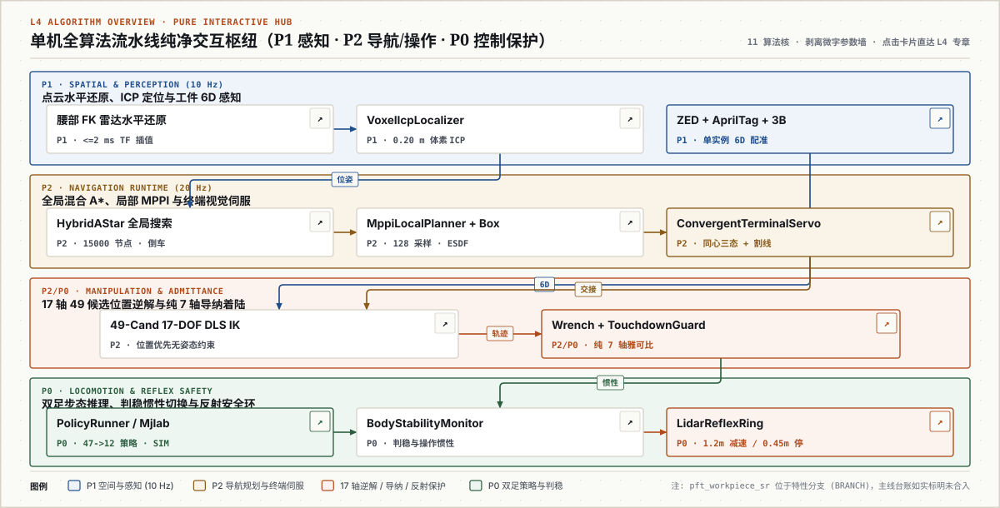

定位与上下游边界
自主定位与移动导航由
spatial_runtime（P1，10 Hz）与
navigation_runtime（P2，20 Hz）两套运行域联合驱动：上游承接
SalLidarWire 三维点云、腰部关节编码器与工位目标坐标，下游向
motion_coordinator
输出无碰撞底盘速度及精确停靠状态。spatial_runtime
先行补偿弯腰作业引起的雷达姿态倾角畸变，使下游全局搜索、局部避障与毫米级终端伺服可统一运行在水平参考基准系上。模块图与接口映射参考
组件地图 与 单机能力总览。

一、空间定位与动态腰部运动学补偿（spatial_runtime）
1.1 C++20 体素 ICP 定位器与激光接入新鲜度
- 体素 ICP
本地定位（
VoxelIcpLocalizer）：定义于src/robot_app/algorithms/lightning_loc/voxel_icp_localizer.hpp，将实时接入的SalLidarWire点云（单帧上限6000点）按0.20 m体素网格降采样并与先验地图匹配，连续输出局部tracking_quality（0至100）以及最近障碍安全净距min_lidar_clearance_m。 - 双路时间同步缓存（
FrameStore）：实现于src/robot_app/modules/spatial_runtime/infrastructure/ros/lightning.py，强制激光帧最大允许年龄max_age_ns = 500 ms，激光扫描时刻与 IMU / 关节 TF 插值时间差上限<= 2 ms；一旦发生时钟回退或epoch跳变立即清空历史帧并重定位。 - 局部基准输出（
body_frame.py）：通过src/robot_app/modules/spatial_runtime/domain/body_frame.py向导航与操作模块统一暴露localized_base标准位姿框架。
1.2 弯腰倾斜工况下的激光外参实时补偿
由于 3D LiDAR
安装在受腰部俯仰/横滚/偏航关节驱动的躯干上，作业姿态变化会导致扫描平面大幅偏离地平面。SalLidarIngress（src/robot_app/modules/spatial_runtime/infrastructure/ros/sal_lidar.py）引入
compensate_waist_for_livox 补偿环节：
- 根据同源时间戳的实测腰部关节角，调用
base_to_parent_from_robot正向运动学推算激光雷达相对名义零腰角基准系lidar_frame的实时旋转与平移偏差。 - 在进入体素 ICP 或占据栅格构建前，将倾斜点云投影回名义水平零腰姿坐标系。
- 下游固定外参 SLAM 算法即可无感知复用常规水平点云流，避免弯腰抓取或抬头观察时地图垂直撕裂或定位漂移。
二、多层接力规划管线：HybridAStar、MPPI、BoxRoute
与 ResponseSampling
| 规划层次 | 核心模块与代码路径 | 关键求解参数与搜索机制 |
|---|---|---|
| 全局运动学搜索 | HybridAStar（src/robot_app/algorithms/pct_nav/hybrid_astar.hpp） |
扩展步长 0.35 m、最小转弯半径
1.2 m、节点扩展上限
15000；针对窄通道与带弯角约束路径生成初始无碰撞轨迹 |
| 多约束局部优化 | MppiLocalPlanner（src/robot_app/algorithms/pct_nav/mppi_local_planner.hpp） |
默认并行采样 64 条轨迹（上限 128
条），滚动预测 15 步 × 0.1 s；内置全向
kHolonomic、差速 kDifferential、阿克曼
kAckermann 三种底盘模型，默认安全净距
safety_clearance_m = 0.45 m，支持最大 250k
栅格 ESDF 查询 |
| 工位框线对接回退 | plan_box（src/robot_app/modules/navigation_runtime/infrastructure/geometry/box_route.py） |
在 0.05 m 分辨率占据栅格联合 PctProvider
规划出站-入站轨迹；首轮（Pass
0）优先尝试原地单向调头；受阻时依序激活三层靠泊拉出回退（goal_inplace、start_inplace、both_pull） |
| 走廊速度护栏与前向模拟 | SurfaceConstraintSpec 与
ResponseSampling（src/robot_app/modules/navigation_runtime/infrastructure/planners/response_sampling.py） |
C++ 端提供 guard_corridor_twist 保护窄道不超限；Python
端对航向候选 heading_candidates 与平移候选
translation_candidates 结合速度斜率制动边界做前向
rollout（保持步长 hold_step = 0.02 s、持续
0.5 s 保持后校核尾部净空） |
| 粗精接力平动调整 | PlanarAdjustment（src/robot_app/algorithms/pct_nav/planar_adjustment.hpp） |
0.10 m/s 低速平调，必要时沿当前朝向先倒退
0.20 m 脱困，收敛窗口 5 cm / 10° 且附带
0.10 s 稳定等待 |
三、零先验终端收敛伺服：ConvergentTerminalServo
工位操作前的最后 0.3 m
精停易受地面摩擦不均、鞋底弹性形变与步态稳态漂移影响而产生系统性偏置。src/robot_app/modules/navigation_runtime/domain/control/convergent_terminal_servo.py
中的 ConvergentTerminalServo
采用同心圆三态切换机制与零先验在线学习解决终段抖动问题：
- 三状态同心收敛机（
IDLE_IN_BAND/APPROACH/SETTLE）：当位置偏差落入核心停靠区R_core = min(0.015, 0.30 * r_accept, r_entry_cap)（m）以内且偏航收敛后进入IDLE_IN_BAND（输出零速），避免微幅量化噪声引起反复微步踩踏；仅当外溢超出公开验收阈值r_accept时重入APPROACH或SETTLE平滑归位。 - 零先验阻尼割线偏置估计（
b_xy）：初始化偏置严格为零（不假设任何硬件固定漂移），在近距SETTLE过程中根据实发参考速度与实际机体系位移增量做阻尼割线更新，并将估计偏置总量硬性限幅在min(0.12, 2.5 * r_accept)内，既能消除长周期步态稳态侧滑，又防止噪声环境下估算积分发散。
四、三维激光回环定位与导航避障录像
下面视频展示 FACRI 在启用动态腰部外参补偿、体素 ICP
定位与 spatial_runtime / navigation_runtime
实时避障路线更新条件下的回环定位过程（PHYSICAL_SIM
证据级别，原速呈现）。
MED-SPATIAL-01 · 3D LiDAR SLAM
回环定位与局部通道避障（1600×1000、30 fps、15.0 s、1x
原速、PHYSICAL_SIM）：